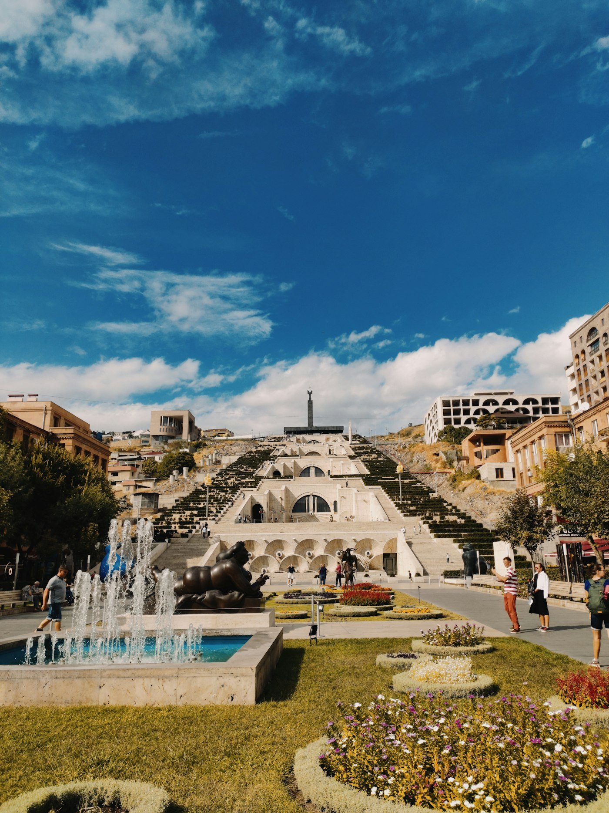

Держи немного наличных
В Ереване карта обычно выручает, но за городом, на рынках и в маленьких семейных местах наличные всё ещё нужны.
Личный путеводитель · 7 дней
Армения лучше раскрывается не через список галочек, а через длинные обеды, горные дороги и разговоры, на которые ты не закладывал время.

01 · Главное
Оставь в каждом дне свободное окно. Именно туда обычно помещается самое интересное: двор с абрикосами, незапланированный кофе или дорога к монастырю без единого автобуса вокруг.
Для первой поездки я советую две базы: Ереван и Дилижан. Так меньше переездов, а впечатлений — больше.
02 · Маршрут
Держи Ереван основной базой, а одну ночь проведи среди лесов Дилижана. Время в дороге ориентировочное — в горах спешка редко помогает.
Настроиться на ритм
Каскад утром, Конд без маршрута, Вернисаж и долгий вечер на Сарьяна. Не ставь музеи подряд — оставь время просто ходить.
Камень и пространство
Сначала храм Гарни, затем ущелье с «Симфонией камней» и монастырь Гегард. Внутри Гегарда остановись и послушай акустику.
Лучший дорожный день
Выезжай рано ради вида на Арарат. После — обед и вино в Арени, а Нораванк оставь на мягкий вечерний свет.
Сменить воздух
По пути — Севанаванк и вид на озеро. Ночуй в гостевом доме в Дилижане, а утром выбирай лесную прогулку или Агарцин.
Ничего не догонять
Вернись без списка: рынок, любимое кафе, подарки и запас времени перед вылетом. Этот день спасает весь маршрут от суеты.
03 · Практика
Без универсальных истин — только то, что делает дорогу спокойнее.
В Ереване карта обычно выручает, но за городом, на рынках и в маленьких семейных местах наличные всё ещё нужны.
Цена видна заранее, адрес не потеряется, а длинную поездку можно спокойно обсудить до выезда.
Жаркий Ереван и прохладный Севан легко случаются в один день. Лёгкая куртка пригодится даже летом.
За пределами столицы это часто не только кровать, но и лучший домашний ужин всей поездки.
Закладывай запас на серпантины, погоду, фотографии и внезапное «зайдём на пять минут».
Городские питьевые фонтанчики — часть повседневной Армении. Бери с собой многоразовую бутылку.

Ереван · Каскад
04 · За столом
Армянская еда лучше работает в режиме «в центр стола».
Кисломолочный суп с пшеницей — особенно хорош после прохладной дороги.
Простой заказ, который объясняет местную кухню лучше длинного меню.
Не гарнир, а отдельный ритуал. Спроси, что сегодня самое свежее.
Бери к кофе и сравнивай варианты в разных регионах.
Лучший вопрос официанту: «Что бы вы заказали для своей семьи?»
05 · Перед вылетом
Цены, расписания и правила меняются. За пару дней до поездки загляни в официальные источники.
Паспорт, страховка и актуальные правила въезда именно для твоего гражданства.
Офлайн-карта, переводчик и план: местная SIM или роуминг.
Рабочая карта плюс небольшой запас наличных драмов.
Удобная обувь, головной убор, SPF, лёгкая куртка и бутылка для воды.
Скачанные адреса жилья и запас времени на каждый загородный маршрут.
Вот и весь секрет